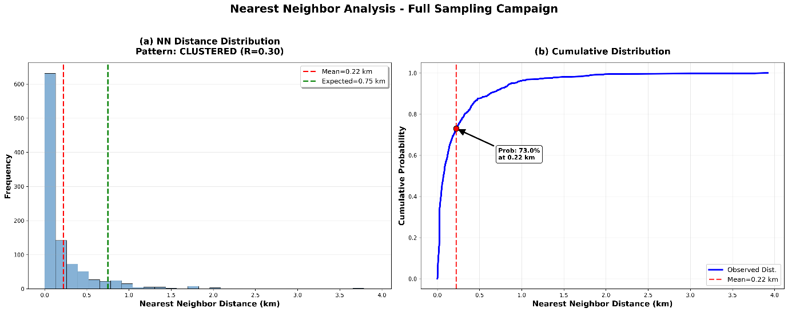
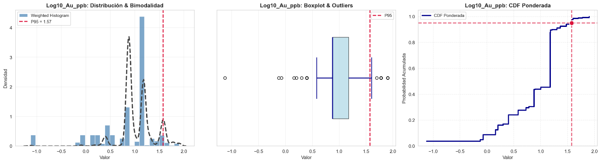
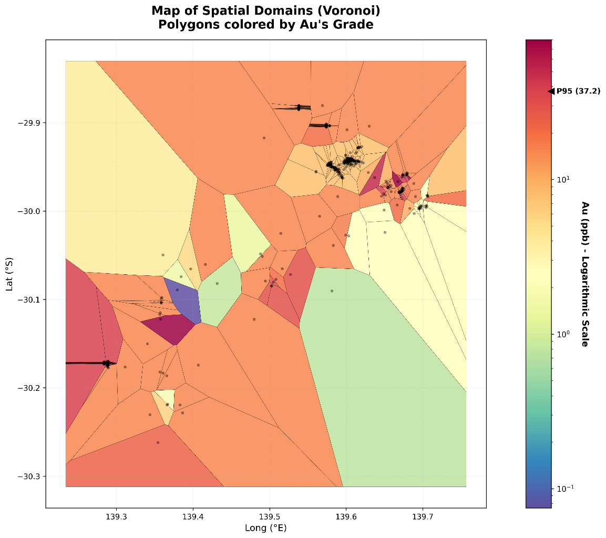

Capítulo 3 · log10 · bimodal · P95 = 1,57 log ≈ 37,5 ppb
El oro no es normal
Asimetría fuerte, transformación log10, y la bimodalidad que luego resultará ser geología.
El oro no se reparte como una campana. Su histograma crudo está aplastado contra la izquierda, con una cola larguísima a la derecha, y hasta que no se transforma con log10 no enseña su forma de verdad: dos poblaciones, y un umbral de anomalía en P95 = 1,57 en escala logarítmica, unos 37,5 ppb.
Este capítulo mira los datos antes de modelar nada: dónde se muestreó, cómo se reparte el oro, qué es una anomalía y dónde caen. Y termina con la decisión de transformar solo lo que hace falta transformar.
Dónde se muestreó, y dónde no
Las muestras no están en una malla regular. Siguen una alineación noroeste-sureste, coherente con el rumbo geológico regional, y se apiñan donde hubo interés: es una campaña dirigida a blancos, con zonas potencialmente relevantes sin una sola muestra.
Eso se puede medir. El análisis del vecino más cercano pregunta, para cada muestra, a qué distancia está la muestra más próxima. La media salió en 0,22 km, cuando un reparto al azar sobre la misma área daría 0,75 km. Y el 73 % de las muestras tiene su vecina a menos de 0,22 km.

Un ejemplo de juguete antes de la teoría
Imagina cuatro muestras con 1, 10, 100 y 1.000 ppb de oro. En un histograma de valores crudos, tres de ellas caen en el primer centímetro del eje y la cuarta se va sola al otro extremo: la escala la manda el valor grande. Ahora toma el logaritmo en base 10: 0, 1, 2 y 3. Cada multiplicar por diez se vuelve sumar uno. Las cuatro muestras quedan equiespaciadas y el histograma, por fin, se puede leer.
Eso es lo único que hace la transformación log10. No cambia los datos: cambia la regla con la que se miran.
El oro crudo, y el oro en logaritmos
En crudo, la distribución del oro muestra una asimetría positiva fuerte: muchísimas muestras con valores bajos y unas pocas muy altas que esconden la estructura de las poblaciones mineralizadas. El histograma aplastado, el diagrama de caja con exceso de atípicos: no se puede interpretar directo.
Transformado, el histograma revela una bimodalidad clara: una población de fondo, que es la línea base geoquímica local, y una población enriquecida, atribuible a eventos de mineralización de alta ley.

Con esa estructura bimodal y el punto de inflexión de la curva acumulada, el percentil 95 se eligió como umbral robusto para separar anomalías: 1,57 en log10, unos 37,5 ppb, que coincide con el quiebre entre la distribución principal y la cola alta.
Las anomalías, en el mapa
El siguiente paso fue proyectar esas anomalías en el espacio con polígonos de Voronoi: a cada muestra se le asigna el área del mapa que le queda más cerca que a cualquier otra, y el polígono se colorea con su ley. Así se ve si los valores altos aparecen aislados o agrupados.

Los polígonos de alta ley se agrupan en dominios continuos, y esa continuidad geométrica es un indicador geoestadístico potente de que la mineralización responde a controles estructurales definidos, posiblemente sistemas de vetas o zonas de alteración extensas, y no a dispersión superficial errática.
Al superponer el mapa geológico, las anomalías se confinan a unidades de basamento (los tonos rosados y verdosos, probablemente complejos intrusivos o secuencias metamórficas), mientras la cobertura sedimentaria en grises pálidos queda casi vacía de anomalías: una sobrecarga estéril. Y contra los depósitos conocidos de tierras raras, las muestras más enriquecidas se agrupan cerca de los depósitos 3, 4 y 7.
Más allá del oro: el resto de la química
Para validar el modelo metalogénico, el análisis se extendió a toda la suite geoquímica con un enriquecimiento proximal contra distal, el llamado gráfico de elementos guía. Las tierras raras pesadas, Ho, Lu, Tb y Dy, salen enriquecidas cerca de los depósitos con razones por encima de 2,0. Y un detalle interesante: el enriquecimiento relativo del oro, el cobre y el zinc en la zona proximal es menor que el de las tierras raras; el oro queda cerca de 1,0 y el cobre aparece deprimido.
El barrido univariante de todos los elementos mostró la dicotomía esperable: los óxidos mayores como el Al2O3 se reparten en dos jorobas, y los elementos económicos traen la asimetría positiva típica de las distribuciones hidrotermales. El itrio es bimodal incluso en crudo. Para el cerio y el lantano, los umbrales de alta ley quedaron en 199,90 ppm y 155,00 ppm.
Transformar solo lo que hace falta
La transformación log10 se aplicó, pero selectivamente: donde la asimetría superaba 1,5. Una regla de talla única habría sido un error, porque transformar una distribución que ya es razonablemente normal puede inducir asimetría negativa artificial. Las que venían bien se quedaron en sus unidades originales, ppm o porcentaje, para conservar su sentido geológico.
Lo que queda establecido
Muestreo agrupado (0,22 km contra 0,75 esperados), oro con asimetría fuerte que en log10 se vuelve bimodal, umbral de anomalía en P95 = 1,57 log (~37,5 ppb), anomalías que forman dominios continuos en unidades de basamento, y transformación solo donde la asimetría la pide. La pregunta que abre el siguiente capítulo es con quién se junta el oro: qué elementos lo acompañan y cuáles lo evitan.